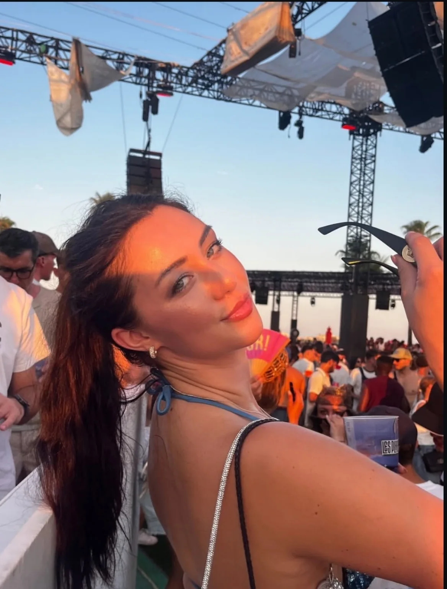
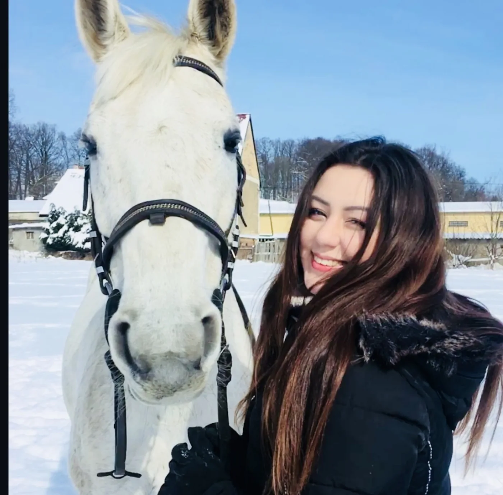
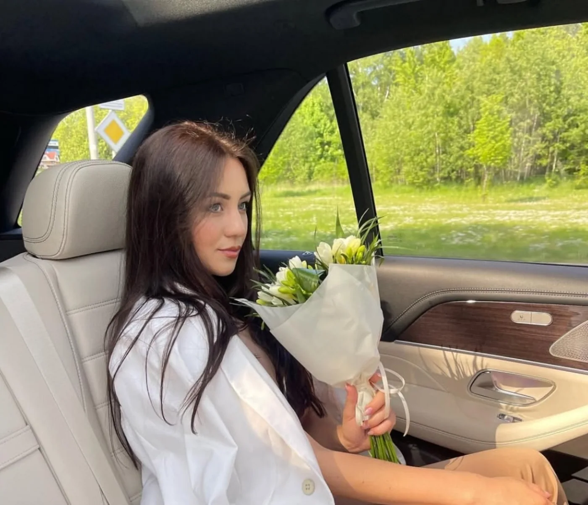
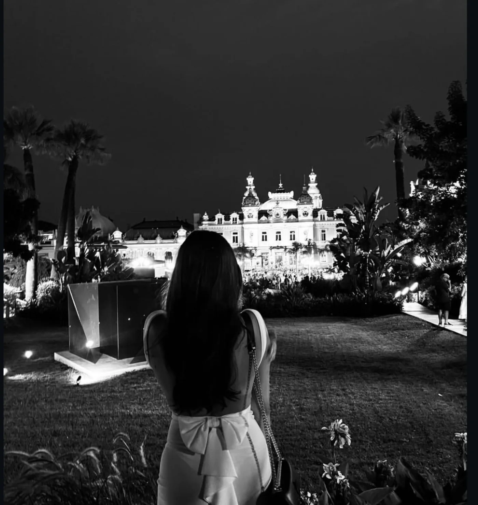

Wszystkiego
najlepszego! ✨
Niektóre przyjaźnie zaczynają się w dzieciństwie. Te najlepsze zostają z nami na całe życie.
↓ Przewiń, by odkryć kolejne rozdziały
Niech spacerów nigdy nie zabraknie
Życzę nam, żebyśmy na spacerach z Freją zawsze znajdowali nowe lasy i cudowne, jeszcze nieodkryte zakątki Wojcieszowa. A Freja? Niech nigdy nie straci radości ze swojej ulubionej zabawki — czyli ze mnie. 😂 Oby tylko czasem pozwalała mi stać na dwóch nogach! 🐾

W siodle po swoje marzenia
Życzę Ci samych fantastycznych koni, cierpliwych uczniów i takich dni w stajni, kiedy wszystko idzie jak z płatka. A jeśli życie postawi przed Tobą przeszkodę, to przecież kto jak kto, ale Ty wiesz najlepiej, jak ją przeskoczyć! 🐎

Od Paryża aż po Amerykę
Niech Paryż wciąż Cię zachwyca, ale oby paszport wkrótce miał znacznie więcej pieczątek! A w USA życzę Ci, żebyś znalazła dobrą amerykańską firmę — i od razu w pakiecie dobrego amerykańskiego chłopaka. 😃 Najlepiej bez dodatkowych opłat i z nielimitowanym urlopem! 🇫🇷 🇺🇸
Oby wszystko szło coraz lepiej!
Życzę Ci, żeby kariera dalej Ci się rozwijała, żebyś mogła dalej pracować zdalnie i żeby z każdym rokiem było tylko lepiej. 😃 Oby praca w ABB weszła na jeszcze wyższy poziom, a do tego żebyś w końcu założyła swoją markę ze sprzętem i odzieżą do jazdy konnej. Fajnie byłoby kiedyś zobaczyć Twoje rzeczy w sklepach! 🐎
I pamiętaj, że cokolwiek się będzie działo, zawsze masz we mnie przyjaciela. Jak będziesz potrzebowała pomocy, to możesz na mnie liczyć. 💛

Jeszcze jedno… 💛

Najlepsze rzeczy w życiu nie potrzebują filtrów ani udawania.
Dominika, życzę Ci tylu podróży, że walizka zacznie prosić o urlop, tylu powodów do śmiechu, że zabraknie tchu, i tylu dobrych ludzi wokół, że nigdy nie będziesz musiała udawać kogoś innego. 💛 A tak już zupełnie serio: bardzo się cieszę, że znamy się od dzieciństwa. Obyśmy mieli przed sobą jeszcze mnóstwo szczerych rozmów, nowych zakątków Wojcieszowa i spacerów, podczas których Freja znowu uzna mnie za sprzęt do skakania. 😂 Wszystkiego najlepszego! 🎂
od Twojego przyjaciela
— Grzesiu 💛